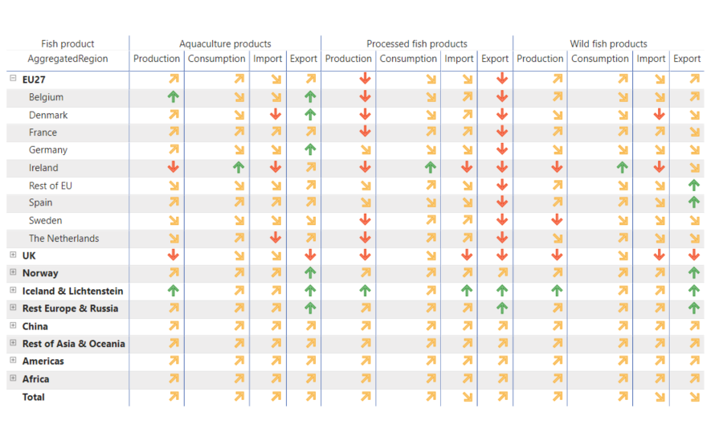

Following the EU-UK Trade and Cooperation Agreement (TCA) entry into force on 1 May 2021, it is important to investigate its potential trade and economic impacts both on the EU and the UK. To make a comprehensive impact analysis, the methodological approach needs to consider the interconnection of fisheries and aquaculture with other actors in the economy. CGE (Computable General Equilibrium) models are appropriate tools to address these needs. This study, commissioned by the European Parliament, applied a CGE model MAGNET to quantify the impact of the TCA on fish related sectors. It was found that TCA is a lose-lose situation to all affected parties and notable welfare losses can be expected due to increased protectionism and misallocation of resources. Parties outside of the EU and the UK, like Norway and Iceland, are expected to increase their trade in FAPs with both the UK and the EU. The overall impacts of the TCA are larger for the UK than the EU, with Ireland being a notable exception. For the EU the main impact is not on the wild fisheries but on the fish processing sector, due to the increased trade costs.
 Source: Figure, Impacts of the EU-UK TCA on fisheries and aquaculture in the EU: Trade aspects
The impact on the fish processing sector could be reduced by a removal of the non-necessary non-tariff measures (NTMs) trade cost burdens by for instance providing a mutual recognition of the origin and quality of the fisheries products. As the fish processing sector is most negatively impacted, specific measures to support the EU fish processing industry could be considered. For instance, the Brexit Adjustment Reserve could also incorporate measures to support fish processing businesses. It would be worthwhile to carry out complementary case studies to assess company-level impact of the reduced TACs.
Contact: Heleen Bartelings, Zuzana Smeets Kristkova